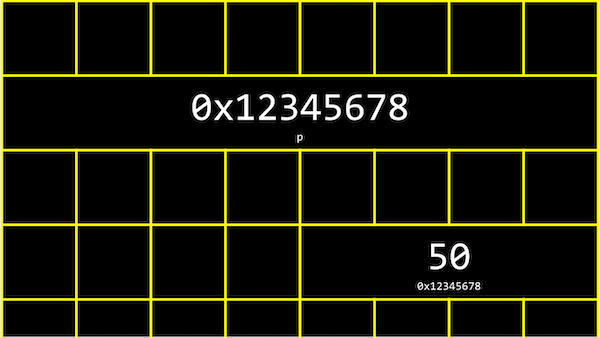
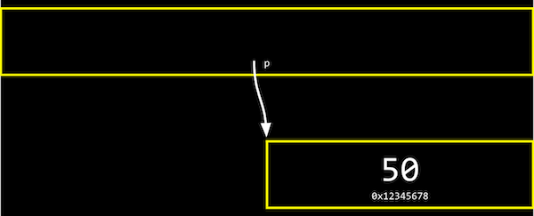
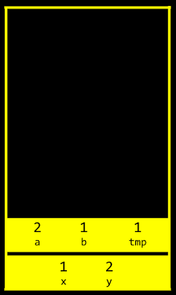

Lecture 4
Hexadecimal
- In week 0, we learned binary, a counting system with 0s and 1s.
- In week 2, we talked about memory and how each byte has an address, or identifier, so we can refer to where our variables are actually stored.
- It turns out that, by convention, the addresses for memory use the counting system hexadecimal, where there are 16 digits, 0-9 and A-F.
- Recall that, in binary, each digit stood for a power of 2:
128 64 32 16 8 4 2 1 1 1 1 1 1 1 1 1- With 8 bits, we can count up to 255.
- It turns out that, in hexadecimal, we can perfectly count up to 8 binary bits with just 2 digits:
16^1 16^0 F F- Here, the
Fis a value of 15 in decimal, and each place is a power of 16, so the firstFis 16^1 * 15 = 240, plus the secondFwith the value of 16^0 * 15 = 15, for a total of 255.
- Here, the
- And
0Ais the same as 10 in decimal, and0Fthe same as 15.10in hexadecimal would be 16, and we would say it as “one zero in hexadecimal” instead of “ten”, if we wanted to avoid confusion. - The RGB color system also conventionally uses hexadecimal to describe the amount of each color. For example,
000000in hexadecimal means 0 of each red, green, and blue, for a color of black. AndFF0000would be 255, or the highest possible, amount of red. With different values for each color, we can represent millions of different colors. - In writing, we can also indicate a value is in hexadecimal by prefixing it with
0x, as in0x10, where the value is equal to 16 in decimal, as opposed to 10.
Pointers
- We might create a value
n, and print it out:#include <stdio.h> int main(void) { int n = 50; printf("%i\n", n); } - In our computer’s memory, there are now 4 bytes somewhere that have the binary value of 50, labeled
n:

- It turns out that, with the billions of bytes in memory, those bytes for the variable
nstarts at some unique address that might look like0x12345678. - In C, we can actually see the address with the
&operator, which means “get the address of this variable”:#include <stdio.h> int main(void) { int n = 50; printf("%p\n", &n); }- And in the CS50 IDE, we might see an address like
0x7ffe00b3adbc, where this is a specific location in the server’s memory.
- And in the CS50 IDE, we might see an address like
- The address of a variable is called a pointer, which we can think of as a value that “points” to a location in memory. The
*operator lets us “go to” the location that a pointer is pointing to. - For example, we can print
*&n, where we “go to” the address ofn, and that will print out the value ofn,50, since that’s the value at the address ofn:#include <stdio.h> int main(void) { int n = 50; printf("%i\n", *&n); } - We also have to use the
*operator (in an unfortunately confusing way) to declare a variable that we want to be a pointer:#include <stdio.h> int main(void) { int n = 50; int *p = &n; printf("%p\n", p); }- Here, we use
int *pto declare a variable,p, that has the type of*, a pointer, to a value of typeint, an integer. Then, we can print its value (something like0x12345678), or print the value at its location withprintf("%i\n", *p);.
- Here, we use
- In our computer’s memory, the variables might look like this:
- We have a pointer,
p, with the address of some variable.
- We have a pointer,
- We can abstract away the actual value of the addresses now, since they’ll be different as we declare variables in our programs, and simply think of
pas “pointing at” some value:
 - Let’s say we have a mailbox labeled “123”, with the number “50” inside it. The mailbox would be
int n, since it stores an integer. We might have another mailbox with the address “456”, inside of which is the value “123”, which is the address of our other mailbox. This would beint *p, since it’s a pointer to an integer. - With the ability to use pointers, we can create different data structures, or different ways to organize data in memory that we’ll see next week.
- Many modern computer systems are “64-bit”, meaning that they use 64 bits to address memory, so a pointer will be 8 bytes, twice as big as an integer of 4 bytes.
string
- We might have a variable
string sfor a name likeEMMA, and be able to access each character withs[0]and so on:
- But it turns out that each character is stored in memory at a byte with some address, and
sis actually just a pointer with the address of the first character:

- And since
sis just a pointer to the beginning, only the\0indicates the end of the string. - In fact, the CS50 Library defines a
stringwithtypedef char *string, which just says that we want to name a new type,string, as achar *, or a pointer to a character. - Let’s print out a string:
#include <cs50.h> #include <stdio.h> int main(void) { string s = "EMMA"; printf("%s\n", s); } - This is familiar, but we can just say:
#include <stdio.h> int main(void) { char *s = "EMMA"; printf("%s\n", s); }- This will also print
EMMA.
- This will also print
- With
printf("%p\n", s);, we can printsas its value as a pointer, like0x42ab52. (printfknows to go to the address and print the entire string when we use%sand pass ins, even thoughsonly points to the first character.) - We can also try
printf("%p\n", &s[0]);, which is the address of the first character ofs, and it’s exactly the same as printings. And printing&s[1],&s[2], and&s[3]gets us the addresses that are the next characters in memory after&s[0], like0x42ab53,0x42ab54, and0x42ab55, exactly one byte after another. - And finally, if we try to
printf("%c\n", *s);, we get a single characterE, since we’re going to the address contained ins, which has the first character in the string. - In fact,
s[0],s[1], ands[2]actually map directly to*s,*(s+1), and*(s+2), since each of the next characters are just at the address of the next byte.
Compare and copy
- Let’s look at
compare0:#include <cs50.h> #include <stdio.h> int main(void) { // Get two integers int i = get_int("i: "); int j = get_int("j: "); // Compare integers if (i == j) { printf("Same\n"); } else { printf("Different\n"); } }- We can compile and run this, and our program works as we’d expect, with the same values of the two integers giving us “Same” and different values “Different”.
- In
compare1, we see that the same string values are causing our program to print “Different”:#include <cs50.h> #include <stdio.h> int main(void) { // Get two strings string s = get_string("s: "); string t = get_string("t: "); // Compare strings' addresses if (s == t) { printf("Same\n"); } else { printf("Different\n"); } }- Given what we now know about strings, this makes sense because each “string” variable is pointing to a different location in memory, where the first character of each string is stored. So even if the values of the strings are the same, this will always print “Different”.
- For example, our first string might be at address 0x123, our second might be at 0x456, and
swill be0x123andtwill be0x456, so those values will be different. - And
get_string, this whole time, has been returning just achar *, or a pointer to the first character of a string from the user.
- Now let’s try to copy a string:
#include <cs50.h> #include <ctype.h> #include <stdio.h> int main(void) { string s = get_string("s: "); string t = s; t[0] = toupper(t[0]); // Print string twice printf("s: %s\n", s); printf("t: %s\n", t); }- We get a string
s, and copy the value ofsintot. Then, we capitalize the first letter int. - But when we run our program, we see that both
sandtare now capitalized. - Since we set
sandtto the same values, they’re actually pointers to the same character, and so we capitalized the same character!
- We get a string
- To actually make a copy of a string, we have to do a little more work:
#include <cs50.h> #include <ctype.h> #include <stdio.h> #include <string.h> int main(void) { char *s = get_string("s: "); char *t = malloc(strlen(s) + 1); for (int i = 0, n = strlen(s); i < n + 1; i++) { t[i] = s[i]; } t[0] = toupper(t[0]); printf("s: %s\n", s); printf("t: %s\n", t); }- We create a new variable,
t, of the typechar *, withchar *t. Now, we want to point it to a new chunk of memory that’s large enough to store the copy of the string. Withmalloc, we can allocate some number of bytes in memory (that aren’t already used to store other values), and we pass in the number of bytes we’d like. We already know the length ofs, so we add 1 to that for the terminating null character. So, our final line of code ischar *t = malloc(strlen(s) + 1);. - Then, we copy each character, one at a time, and now we can capitalize just the first letter of
t. And we usei < n + 1, since we actually want to go up ton, to ensure we copy the terminating character in the string. - We can actually also use the
strcpylibrary function withstrcpy(t, s)instead of our loop, to copy the stringsintot. To be clear, the concept of a “string” is from the C language and well-supported; the only training wheels from CS50 are the typestringinstead ofchar *, and theget_stringfunction.
- We create a new variable,
- If we didn’t copy the null terminating character,
\0, and tried to print out our stringt,printfwill continue and print out the unknown, or garbage, values that we have in memory, until it happens to reach a\0, or crashes entirely, since our program might end up trying to read memory that doesn’t belong to it!
valgrind
- It turns out that, after we’re done with memory that we’ve allocated with
malloc, we should callfree(as infree(t)), which tells our computer that those bytes are no longer useful to our program, so those bytes in memory can be reused again. - If we kept running our program and allocating memory with
malloc, but never freed the memory after we were done using it, we would have a memory leak, which will slow down our computer and use up more and more memory until our computer runs out. valgrindis a command-line tool that we can use to run our program and see if it has any memory leaks. We can run valgrind on our program above withhelp50 valgrind ./copyand see, from the error message, that line 10, we allocated memory that we never freed (or “lost”).- So at the end, we can add a line
free(t), which won’t change how our program runs, but no errors from valgrind. - Let’s take a look at
memory.c:// http://valgrind.org/docs/manual/quick-start.html#quick-start.prepare #include <stdlib.h> void f(void) { int *x = malloc(10 * sizeof(int)); x[10] = 0; } int main(void) { f(); return 0; }- This is an example from valgrind’s documentation (valgrind is a real tool, while help50 was written specifically to help us in this course).
- The function
fallocates enough memory for 10 integers, and stores the address in a pointer calledx. Then we try to set the 11th value ofxwithx[10]to0, which goes past the array of memory we’ve allocated for our program. This is called buffer overflow, where we go past the boundaries of our buffer, or array, and into unknown memory.
- valgrind will also tell us there’s an “Invalid write of size 4” for line 8, where we are indeed trying to change the value of an integer (of size 4 bytes).
- And this whole time, the CS50 Library has been freeing memory it’s allocated in
get_string, when our program finishes!
Swap
- We have two colored drinks, purple and green, each of which is in a cup. We want to swap the drinks between the two cups, but we can’t do that without a third cup to pour one of the drink into first.
- Now, let’s say we wanted to swap the values of two integers.
void swap(int a, int b) { int tmp = a; a = b; b = tmp; }- With a third variable to use as temporary storage space, we can do this pretty easily, by putting
aintotmp, and thenbtoa, and finally the original value ofa, now intmp, intob.
- With a third variable to use as temporary storage space, we can do this pretty easily, by putting
- But, if we tried to use that function in a program, we don’t see any changes:
#include <stdio.h> void swap(int a, int b); int main(void) { int x = 1; int y = 2; printf("x is %i, y is %i\n", x, y); swap(x, y); printf("x is %i, y is %i\n", x, y); } void swap(int a, int b) { int tmp = a; a = b; b = tmp; }- It turns out that the
swapfunction gets its own variables,aandbwhen they are passed in, that are copies ofxandy, and so changing those values don’t changexandyin themainfunction.
- It turns out that the
Memory layout
- Within our computer’s memory, the different types of data that need to be stored for our program are organized into different sections:

- The machine code section is our compiled program’s binary code. When we run our program, that code is loaded into the “top” of memory.
- Globals are global variables we declare in our program or other shared variables that our entire program can access.
- The heap section is an empty area where
malloccan get free memory from, for our program to use. - The stack section is used by functions in our program as they are called. For example, our
mainfunction is at the very bottom of the stack, and has the local variablesxandy. Theswapfunction, when it’s called, has its own frame, or slice, of memory that’s on top ofmain’s, with the local variablesa,b, andtmp:
- Once the function
swapreturns, the memory it was using is freed for the next function call, and we lose anything we did, other than the return values, and our program goes back to the function that calledswap. - So by passing in the addresses of
xandyfrommaintoswap, we can actually change the values ofxandy:
- Once the function
- By passing in the address of
xandy, ourswapfunction can actually work:#include <stdio.h> void swap(int *a, int *b); int main(void) { int x = 1; int y = 2; printf("x is %i, y is %i\n", x, y); swap(&x, &y); printf("x is %i, y is %i\n", x, y); } void swap(int *a, int *b) { int tmp = *a; *a = *b; *b = tmp; }- The addresses of
xandyare passed in frommaintoswap, and we use theint *asyntax to declare that ourswapfunction takes in pointers. We save the value ofxtotmpby following the pointera, and then take the value ofyby following the pointerb, and store that to the locationais pointing to (x). Finally, we store the value oftmpto the location pointed to byb(y), and we’re done.
- The addresses of
- If we call
malloctoo many times, we will have a heap overflow, where we end up going past our heap. Or, if we have too many functions being called, we will have a stack overflow, where our stack has too many frames of memory allocated as well. And these two types of overflow are generally known as buffer overflows, after which our program (or entire computer) might crash.
get_int
- We can implement
get_intourselves with a C library function,scanf:#include <stdio.h> int main(void) { int x; printf("x: "); scanf("%i", &x); printf("x: %i\n", x); }scanftakes a format,%i, so the input is “scanned” for that format, and the address in memory where we want that input to go. Butscanfdoesn’t have much error checking, so we might not get an integer.
- We can try to get a string the same way:
#include <stdio.h> int main(void) { char *s = NULL; printf("s: "); scanf("%s", s); printf("s: %s\n", s); }- But we haven’t actually allocated any memory for
s(sisNULL, or not pointing to anything), so we might want to callchar s[5]to allocate an array of 5 characters for our string. Then,swill be treated as a pointer inscanfandprintf. - Now, if the user types in a string of length 4 or less, our program will work safely. But if the user types in a longer string,
scanfmight be trying to write past the end of our array into unknown memory, causing our program to crash.
- But we haven’t actually allocated any memory for
Files
- With the ability to use pointers, we can also open files:
#include <cs50.h> #include <stdio.h> #include <string.h> int main(void) { // Open file FILE *file = fopen("phonebook.csv", "a"); // Get strings from user char *name = get_string("Name: "); char *number = get_string("Number: "); // Print (write) strings to file fprintf(file, "%s,%s\n", name, number); // Close file fclose(file); }fopenis a new function we can use to open a file. It will return a pointer to a new type,FILE, that we can read from and write to. The first argument is the name of the file, and the second argument is the mode we want to open the file in (rfor read,wfor write, andafor append, or adding to).- After we get some strings, we can use
fprintfto print to a file. - Finally, we close the file with
fclose.
- Now we can create our own CSV files, files of comma-separated values (like a mini-spreadsheet), programmatically.
JPEG
- We can also write a program that opens a file and tells us if it’s a JPEG (image) file:
#include <stdio.h> int main(int argc, char *argv[]) { // Check usage if (argc != 2) { return 1; } // Open file FILE *file = fopen(argv[1], "r"); if (!file) { return 1; } // Read first three bytes unsigned char bytes[3]; fread(bytes, 3, 1, file); // Check first three bytes if (bytes[0] == 0xff && bytes[1] == 0xd8 && bytes[2] == 0xff) { printf("Maybe\n"); } else { printf("No\n"); } // Close file fclose(file); }- Now, if we run this program with
./jpeg brian.jpg, our program will try to open the file we specify (checking that we indeed get a non-NULL file back), and read the first three bytes from the file withfread. - We can compare the first three bytes (in hexadecimal) to the three bytes required to begin a JPEG file. If they’re the same, then our file is likely to be a JPEG file (though, other types of files may still begin with those bytes). But if they’re not the same, we know it’s definitely not a JPEG file.
- Now, if we run this program with
- We can use these abilities to read and write files, in particular images, and modify them by changing the bytes in them, in this week’s problem set!